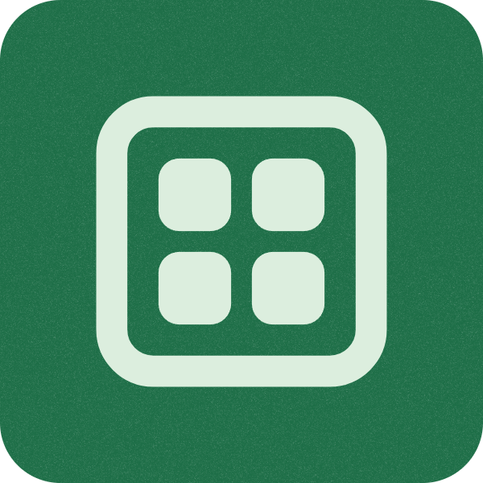

Abas, sem bagunça
Tenha várias notas abertas na mesma janela e alterne entre elas sem multiplicar processos.
nota.txtideias.txt＋

SlinkyFeito para Windows
Um editor de texto leve, nativo e direto ao ponto — com abas, temas confortáveis e a simplicidade do Bloco de Notas clássico.
Windows 10 1809+ · Código aberto · MIT
Tudo que importa
Tenha várias notas abertas na mesma janela e alterne entre elas sem multiplicar processos.
Claro, amarelado, escuro, azulado ou Dracula. Contraste acessível e uma superfície de escrita sem hover desnecessário.
Nativo em WinUI 3, abre rápido e mantém a edição simples, previsível e responsiva.
Seu espaço, seu clima
O Slinky usa uma única paleta coerente em todas as abas, no editor e nos estados de interação. A interface fica presente só quando precisa.
Saiba mais sobre o projeto →Pronto para começar?
Na release, baixe o pacote, o certificado e Install-Slinky.ps1 para instalar com confiança correta.